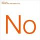

为什么DotCloud这么火？
 现在当个软件开发人员可真是不错，你有大把的开源语言，数据库和编程框架可以选择，同时就连运行你的应用的云服务也都有很多选择。
现在当个软件开发人员可真是不错，你有大把的开源语言，数据库和编程框架可以选择，同时就连运行你的应用的云服务也都有很多选择。
但是这些多样化的选择可能对于经理一类的管理职位来说就是个噩梦了。系统管理员的职责就是让整个软件系统安全、稳定的工作起来。所以如果下面的程序员使用的工具越多，那么管理人员的工作强度就会越高。这也是程序员们经常抱怨自己的开发弹性被公司牢牢限制住的原因。
来自旧金山的 DotCloud 就致力于解决这一问题，他们开发了一个平台，可以自动进行配置，解决不同工具之间的兼容性问题。无论你用的是像 PHP 和 MySQL 已经有了很多支持者的工具，还是像 Node.js 和 MongoDB 这样的新生代，DotCloud 都可以帮你解决他们的协同工作问题。
他们的老板 Solomon Hykes 说：“DotCloud 提供给管理人员一个平台，来管理和监控他们的产品。同时，开发人员可以随心所欲，使得他们的工作更有效率。”
简单来说，DotCloud 使得原来需要复杂的大型付费软件才能完成的手工管理工作变得自动化。它还提供了各种监控、控制和报警功能。当前 DotCloud 运行在 Amazon 的EC2上，但是他们的抽象层次使得他们理论上可以运行在各种各样的云服务上面。
DotCloud 已经获得了大量的褒扬和荣誉。而他们最引以为自豪的就是他们的原始点子，也就是多层次平台概念。
本文由Tech2IPO作者Richard整理自 GigaOM，点此查看原文。如果您对该话题感兴趣，可以留言评论。如果您对Tech2ipo其他内容也感兴趣，请通过RSS订阅我们，或者在微博上关注我们的最新动态。
0


Richard Cui
北京邮电大学计算机科学与技术专业本科在读，关注创新，关注IT界的各种新鲜事。
关注我们
查看更多专栏作者
企业寻人查看更多
- 爱乐活无线急招产品、开发、策划众多职
- 上海 举栗网络招聘前后端工程师
- 广州 每日圈招聘技术合伙人、前端、开
- 南京 约饭网招募PHP开发工程师
- 北京 飞讯招聘PHP开发工程师
- 北京 音乐创业公司招JS前端工程师
- 上海 简意网络急招前后端工程师、UI
- 上海 电商项目寻Lead Devel
- 北京 MEPP招Flash及网站工程
- 北京 拍客网招聘PHP/.NET开发
热门文章
- 假如有这么个应用——帮助餐馆将订不出去的部分餐位订出去 (33)
- 假如有这么个应用——基于LBS的记账应用 (28)
- 知乎，知乎？ (27)
- Tech2IPO微博互动送书活动！ (27)
- 假如有这么个应用——开篇 (21)
- HT实验室：携程VS去哪儿，机票酒店哪家订？ (21)
- 假如有这么个应用——“哪有”本地消费问答平台 (19)
- 公司诊断之二：淘宝网SNS化很难成功 (17)
- 微博时代，王者之争：“新浪微博”与“腾讯微博”评测报告 (17)
- “酷我”的缺憾――“酷我听听”iOS平台评测 (16)
- 中国团购之路 (15)
- 分类信息网站58同城与赶集网评测：“神奇的 啥都有” (15)
- 模仿与超越：轻博客Tumblr VS 点点 (15)
- 几大热门网站比较：哪个网站用户忠诚度最高？ (14)
- 假如有这么个应用——售卖这个世界的声音 (14)